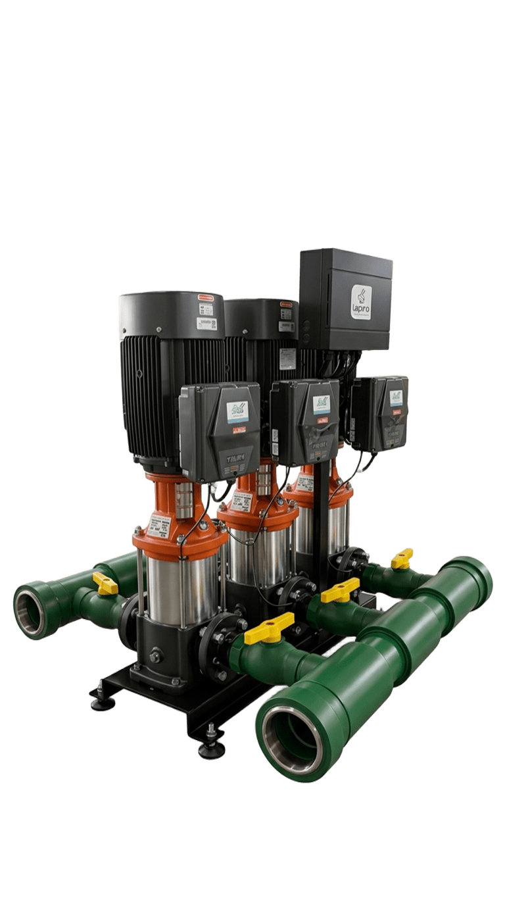
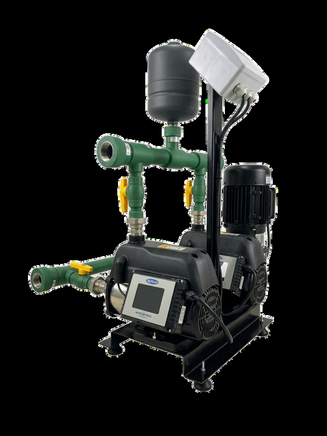

{{ p.num }} de 11{{ p.famLabel }}
{{ p.name }}
{{ p.sub }}
Ver ficha técnica
↗


H, construção horizontal. V, vertical. Compact, Plus e Prime designam a arquitetura de acionamento de cada família, não um nível de desempenho.
A vazão combinada considera as unidades efetivamente em operação na mesma altura manométrica. A unidade exclusivamente de reserva fica fora desse total e a pressão não é somada.
Altura manométrica máxima e vazão máxima geralmente não representam o mesmo ponto de funcionamento. A localização do inversor não determina, sozinha, eficiência ou capacidade.
O escopo vai da seleção hidráulica à montagem do conjunto e do painel. Cada sistema é composto a partir do projeto do empreendimento, considerando o ponto de operação, o arranjo disponível na casa de bombas e a lógica de controle prevista.
Construtoras e incorporadoras, projetistas hidráulicos, indústrias, condomínios e administradoras de empreendimentos.
{{ cur.desc }}
{{ cur.op }}
{{ cur.app }}